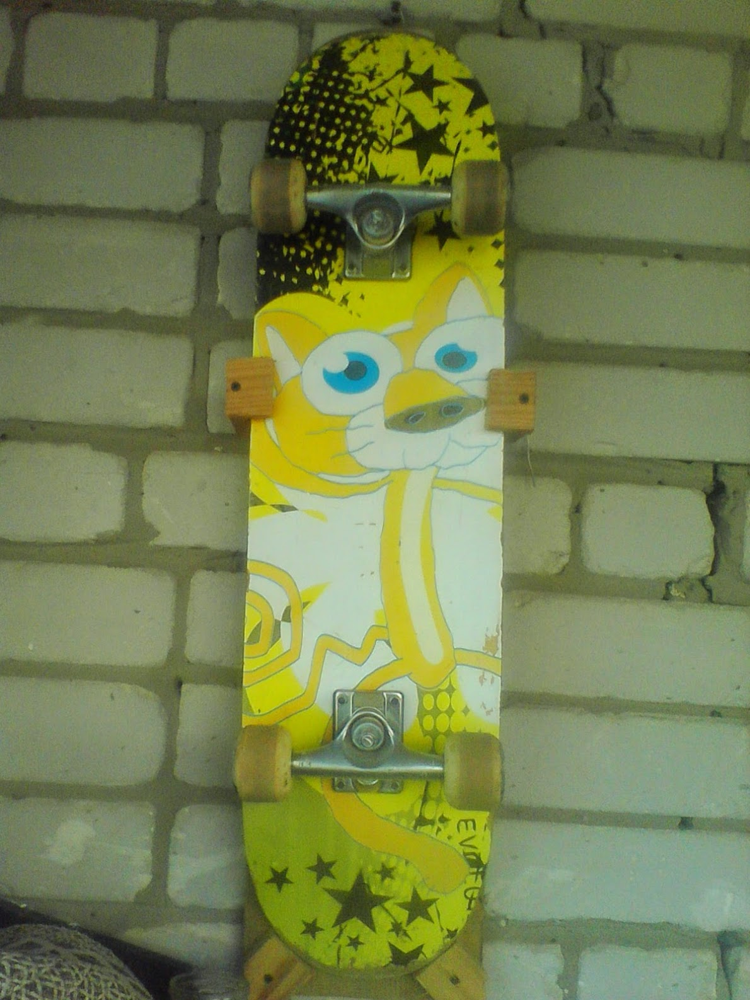

Очень нравятся механики в играх, основанные на взаимодействии с реальным миром. Когда не только ты хранишь воспоминания об игровом мире, но и игровой мир хранит воспоминания о тебе или влияет на тебя. Собрал парочку примеров.
Детские игры про Скуби-Ду (хотя сам Скуби не детский, но это опустим) предлагают раскраски и рецепты (!) из игры: видео от Дмитрия Бурдукова.
TEARAWAY на PS Vita использует камеру консоли для отображения игрока как Солнца или для переноса текстуры на персонажей: видео от Сергея Москвина
Я посмотрел эти видео, сделал для себя заметку и забыл про это. А тут вспомнил. Оказывается, я ещё в детстве видел такую концепцию. На самом первом смартфоне у меня была игра True Skate, которая позволяла перенести любое изображение на доску. Так вот в те года у меня был свой скейт! Я сфоткал его, залил изображение и играл дико довольный со своим собственным раскрасом.
Вообще, весь этот спич для того, чтобы вы заценили этого котяру. This is literally me!
